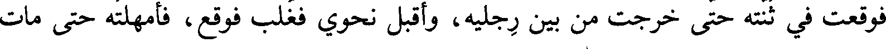
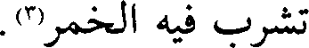
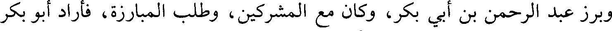
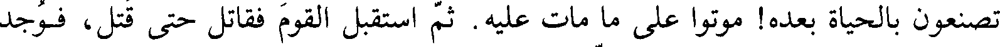
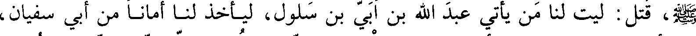
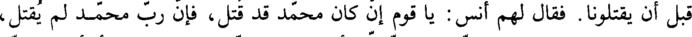
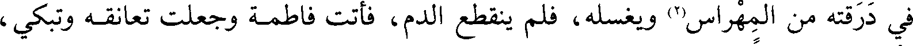
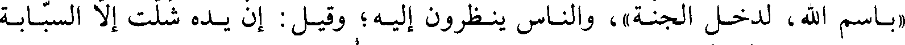

File: 000270.gt.txt (if the image is defective, simply delete all Arabic text and the line will be excluded)

فوقعت في ثنته حتى خرجت من بين رجليه وأقبل نحوي فقلب فوقع فأمهلته حتى مات
File: 000271.gt.txt (if the image is defective, simply delete all Arabic text and the line will be excluded)
فأخذت حربتي ثم تنحيت إلى العسكر(1) فرضي الله عن حمزة وأرضاه
File: 000272.gt.txt (if the image is defective, simply delete all Arabic text and the line will be excluded)

وقتل عاصم بن ثابت مسافع بن طلحة وأخاه كلاب بن طلحة بسهمين فحملا
File: 000273.gt.txt (if the image is defective, simply delete all Arabic text and the line will be excluded)
إلى أمهما سلافة(2) وأخبراها أن عاصما قتلهما فنذرت إن أمكنها الله من رأسه أن
File: 000274.gt.txt (if the image is defective, simply delete all Arabic text and the line will be excluded)

(تشرب فيه الخمر(3
File: 000275.gt.txt (if the image is defective, simply delete all Arabic text and the line will be excluded)

وبرز عبد الرحمن بن أبي بكر وكان مع المشركين وطلب المبارزة فأراد أبو بكر
File: 000276.gt.txt (if the image is defective, simply delete all Arabic text and the line will be excluded)

(أن يبرز إليه فقال رسول الله صلى الله عليه وآله وسلم شم سيفك وأمتعنا بك(4
File: 000277.gt.txt (if the image is defective, simply delete all Arabic text and the line will be excluded)
وانتهى أنس بن النضر عم أنس بن مالك إلى عمر وطلحة في رجال من
File: 000278.gt.txt (if the image is defective, simply delete all Arabic text and the line will be excluded)

المهاجرين قد ألقوا بأيديهم فقال ما يحبسكم قالوا قد قتل النبي قال فما
File: 000279.gt.txt (if the image is defective, simply delete all Arabic text and the line will be excluded)

تصنعون بالحياة بعده موتوا على ما مات عليه ثم استقبل القوم فقاتل حتى قتل فوجد
File: 000280.gt.txt (if the image is defective, simply delete all Arabic text and the line will be excluded)

(به سبعون ضربة وطعنة وما عرفه إلا أخته عرفته بحسن بنانه(5
File: 000281.gt.txt (if the image is defective, simply delete all Arabic text and the line will be excluded)

وقيل إن أنس بن النضر سمع نفرا من المسلمين يقولون لما سمعوا أن النبي
File: 000282.gt.txt (if the image is defective, simply delete all Arabic text and the line will be excluded)

صلى الله عليه وآله وسلم قتل ليت لنا من يأتي عبد الله بن أبي بن سلول ليأخذ لنا أمانا من أبي سفيان
File: 000283.gt.txt (if the image is defective, simply delete all Arabic text and the line will be excluded)

يقتلونا فقال لهم أنس يا قوم عن كان محمد قد قتل فإن رب محمد لم يقتل
File: 000284.gt.txt (if the image is defective, simply delete all Arabic text and the line will be excluded)

وكان أول من عرف صلى الله عليه وآله وسلم كعب بن مالك قال فناديت بأعلى صوتي
File: 000285.gt.txt (if the image is defective, simply delete all Arabic text and the line will be excluded)

يا معشر المسلمين أبشروا هذا رسول الله صلى الله عليه وآله وسلم حي لم يقتل فأشار إليه أنصت فلما عرفه
File: 000286.gt.txt (if the image is defective, simply delete all Arabic text and the line will be excluded)

المسلمون نهضوا نحو الشعب ومعه علي وأبو بكر وعمر وطلحة والزبير والحارث
File: 000287.gt.txt (if the image is defective, simply delete all Arabic text and the line will be excluded)

بن الصمة وغيرهم فلما أسند إلى الشعب أدركه أبي بن خلف وهو يقول يا محمد
File: 000288.gt.txt (if the image is defective, simply delete all Arabic text and the line will be excluded)

لا نجوت إن نجوت فعطف عليه رسول الله صلى الله عليه وآله وسلم فطعنه بالحربة في عنقه وكان أبي
File: 000289.gt.txt (if the image is defective, simply delete all Arabic text and the line will be excluded)

يقول بمكة لرسول الله صلى الله عليه وآله وسلم إن عندي العود فرسا أعلفه كل يوم فرقا من ذرة أقتلك عليه
File: 000290.gt.txt (if the image is defective, simply delete all Arabic text and the line will be excluded)

فيقول له النبي ( بل أنا أقتلك إن شاء الله تعالى ) فلما رجع إلى قريش وقد خدشه
File: 000291.gt.txt (if the image is defective, simply delete all Arabic text and the line will be excluded)

رسول الله صلى الله عليه وآله وسلم خدشا غير كبير قال قتلني محمد قالوا والله ما بك بأس قال إنه
File: 000292.gt.txt (if the image is defective, simply delete all Arabic text and the line will be excluded)

(قد كان قال لي أنا أقتلك فوالله لو بصق علي لقتلني فمات عدو الله بسرف(1
File: 000293.gt.txt (if the image is defective, simply delete all Arabic text and the line will be excluded)
وقاتل رسول الله صلى الله عليه وآله وسلم يوم أحد قتالا شديدا فرمى بالنبل حتى فني نبله
File: 000294.gt.txt (if the image is defective, simply delete all Arabic text and the line will be excluded)
وانكسرت سية قوسه وانقطع وتره ولما جرح رسول الله صلى الله عليه وآله وسلم جعل علي ينقل له الماء
File: 000295.gt.txt (if the image is defective, simply delete all Arabic text and the line will be excluded)

في درقته من المهراس(2) ويغسله فلم ينقطع الدم فاتت فاطمة وجعلت تعانقه وتبكي
File: 000296.gt.txt (if the image is defective, simply delete all Arabic text and the line will be excluded)

وأحرقت حصيرا وجعلت على الجرح من رماده فانقطع الدم
File: 000297.gt.txt (if the image is defective, simply delete all Arabic text and the line will be excluded)

ورمى مالك بن زهير الجشمي النبي صلى الله عليه وآله وسلم فاتقاه طلحة بيده فأصاب السهم
File: 000298.gt.txt (if the image is defective, simply delete all Arabic text and the line will be excluded)

خنصره وقيل رماه حبان بن العرقة فقال حس(2) فقال رسول الله صلى الله عليه وآله وسلم لو قال
File: 000299.gt.txt (if the image is defective, simply delete all Arabic text and the line will be excluded)

باسم الله لدخل الجنة) والناس ينظرون إليه وقيل إن يده شلت إلا السبابة)